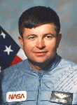

Lyndon B. Johnson Space Center
Houston, Texas 77058
|
National Aeronautics and Space Administration Lyndon B. Johnson Space Center Houston, Texas 77058 |
 |
Biographical Data |
||
KENNETH D. CAMERON (COLONEL, USMC, RET.)
NASA ASTRONAUT (FORMER)
PERSONAL DATA: Born in Cleveland, Ohio. Married, he and his wife have two sons. He enjoys flying (CFI-SEL), athletics, woodworking, reading, shooting, motorcycle riding and amateur radio.
EDUCATION: Graduated from Rocky River High School, Rocky River, Ohio, and entered Massachusetts Institute of Technology. Received a Bachelor of Science degree in Aeronautics & Astronautics from MIT in 1978 and a Master of Science degree in Aeronautics & Astronautics from MIT in 1979. Graduated from U.S. Navy Test Pilot School in 1983. Completed numerous courses in Russian language and Russian space systems at MIT, JSC, and at Gagarin Cosmonaut Training Center, Moscow, Russia. Received a Master of Business Administration degree from Michigan State University in 2002.
SPECIAL HONORS: Legion of Merit, Defense Superior Service Medal, Distinguished Flying Cross (2), Navy Commendation Medal with Combat "V", NASA Leadership Medal, NASA Exceptional Achievement Medal, NASA Space Flight Medals (3), Combat Action Ribbon, Vietnamese Meritorious Unit Citation, the Admiral Louis de Flores Award (MIT), C.S. Draper Laboratory Fellowship, Marine Corps Association Leadership Sword.
EXPERIENCE: Cameron enlisted in the U. S. Marine Corps at Parris Island, South Carolina, and was later commissioned a Second Lieutenant at Officer’s Candidate School in Quantico, Virginia. After graduating from The Basic School and Vietnamese Language School, he was assigned to the Republic of Vietnam for a one-year tour of duty as an infantry platoon commander with the 1st Battalion, 5th Marine Regiment and, later, with the Marine Security Guards at the U.S. Embassy, Saigon. Upon his return to the United States he served as Executive Officer, "I" Company, 3rd Battalion, 2nd Marine Regiment, at Camp Lejeune, North Carolina. He reported to Pensacola, Florida for flight training, receiving his Naval Aviator wings of gold as a jet pilot. He was then assigned to Marine Corps Attack Squadron 223, in Yuma, Arizona, flying A-4M Skyhawks. Upon completion of his squadron tour, Cameron was reassigned to the Massachusetts Institute of Technology, where he was enrolled in Marine Corps Degree Programs, with a Research Fellowship at the C.S Draper Laboratory. Upon completion of graduate studies, he was assigned to flying duty with Marine Aircraft Group 12 in Iwakuni, Japan. He was subsequently assigned to the Pacific Missile Test Center as a Project Pilot and, in 1982, to the U.S. Navy Test Pilot School, Patuxent River, Maryland. Following graduation in 1983, he was assigned as Project Officer and Test Pilot in the F/A-18, A-4, and OV-10 airplanes with the Systems Engineering Test Directorate, Electronic Warfare & Reconnaissance Branch, at the Naval Air Test Center.
He has logged over 4,000 hours flying time in 48 different types of aircraft
NASA EXPERIENCE: Selected by NASA in May 1984, Cameron became an astronaut in June 1985. His technical assignments have included work on Tethered Satellite Payload, flight software testing in the Shuttle Avionics Integration Laboratory (SAIL), launch support activities at Kennedy Space Center, and spacecraft communicator (CAPCOM) in Mission Control for STS-28, 29, 30, 33 & 34. Management assignments include: Section Chief, for astronaut software testing in SAIL; astronaut launch support activities; and Operations Assistant to the Hubble Repair Mission Director. In 1994, Cameron served as the first NASA Director of Operations in Star City, Moscow, where he worked with the Cosmonaut Training Center staff to set up a support system for astronaut operations and training in Star City, and received Russian training in Soyuz and Mir spacecraft systems, and flight training in Russian L-39 aircraft. A veteran of three space flights, Cameron has logged over 561 hours in space. He served as pilot on STS-37 (April 5-11, 1991), and was the spacecraft commander on STS-56 (April 9-17, 1993) and STS-74 (November 12-20, 1995)
Cameron flew his first mission as pilot on STS-37. This mission was launched on April 5, 1991, and featured the deployment of the Gamma Ray Observatory for the purpose of exploring gamma ray sources throughout the universe. Atlantis landed on April 11, 1991. On his second mission he was spacecraft commander on STS-56, carrying ATLAS-2. During this nine-day mission the crew of Discovery conducted atmospheric and solar studies in order to better understand the effect of solar activity on the Earth’s climate and environment, and deployed and retrieved the autonomous observatory Spartan. STS-56 launched on April 8, 1993, and landed at Kennedy Space Center on April 17, 1993. On his third mission, Cameron commanded Atlantis on STS-74, NASA’s second Space Shuttle mission to rendezvous and dock with the Russian Space Station Mir, and the first mission to use the Shuttle to assemble a module and attach it to a Space Station, validating the procedures to be used in assembly of ISS. STS-74 launched on November 12, 1995, and landed at Kennedy Space Center on November 20, 1995.
Cameron left NASA in August of 1996 to join Hughes Training, Inc., a subsidiary of General Motors Corporation, as Executive Director of Houston Operations. In September of 1997, Cameron was transferred to Saab Automobile, AB, in Sweden, as Vehicle Line Executive for the Saab 9-3 automobile. Upon return to the U.S., he worked at the General Motors Technical Center, near Detroit, in positions in World Wide Purchasing, Supplier Technology Acquisition, and Research & Development, Fuel Cell Vehicle Development.
Following the loss of the Space Shuttle Columbia and her crew, Cameron returned to the space program in October 2003, taking a founding position in the NASA Engineering & Safety Center as a Principal Engineer, based at the NASA Langley Research Center, in Hampton, Virginia. In June 2005 Cameron was selected as Deputy Director for Safety of the NESC, and in June 2007 he was relocated to the NESC office at Johnson Space Center, in Houston, Texas.
Cameron retired from NASA in December of 2008 to join Northrop Grumman Corporation as the Director of Houston Operations for Northrop Grumman Aerospace Systems.Cameron currently owns and flies a “Cozy”, an experimental airplane of composite fiberglass construction with canard design configuration and pusher propeller.
JUNE 2010
This is the only version available from NASA. Updates must be sought direct from the above named individual.
{kind=link}